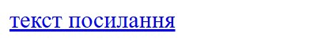

✨ Тег a
Тег a використовується, щоб перетворити текст або картинку на посилання. Тобто, коли ми клікнемо на такий текст або картинку, нас перекине або на іншу веб-сторінку, або на якусь частину поточної сторінки.
Обгортаємо елемент, який хочемо зробити посиланням, тегом a, і всередині відкриваючої частини тегу додаємо атрибут href="" із самим посиланням (на сторінку або на якийсь елемент на сторінці).
<a href="посилання">Текст</a>Цей тег можна додавати сам по собі або всередині чи навколо інших тегів, таких як p, h1, img.
<h1>Текст, <a href="посилання">текст з посиланням</a></h1>
<p><a href="посилання">Текст</a></p>
<a href="посилання">
<img src="">
</a>✨ Стилі для тегу a
Як стилізувати тег a:
a {
/* стилі для посилань */
}По замовчуванню посилання мають синій колір і нижнє підкреслення тексту:
Прибрати підкреслення і змінити колір можна так:
a {
text-decoration: none; /* прибирає підкреслення */
color: red; /* змінює колір */
}Щоб користувач міг бачити різницю між посиланнями та звичайним текстом, можна зробити так, щоб посилання змінювали колір при наведенні на них курсору мишки. Для цього використовуєтьтся псевдоклас :hover:
a:hover {
color: black; /* змінює колір при наведенні мишки */
}✨ Атрибут target
Якщо хочемо, щоб посилання відкривалося в новій вкладці, а не в тій самій, можемо додати до тегу a атрибут target зі значенням "_blank":
<h2><a href="" target="_blank">Луїджі</a></h2>